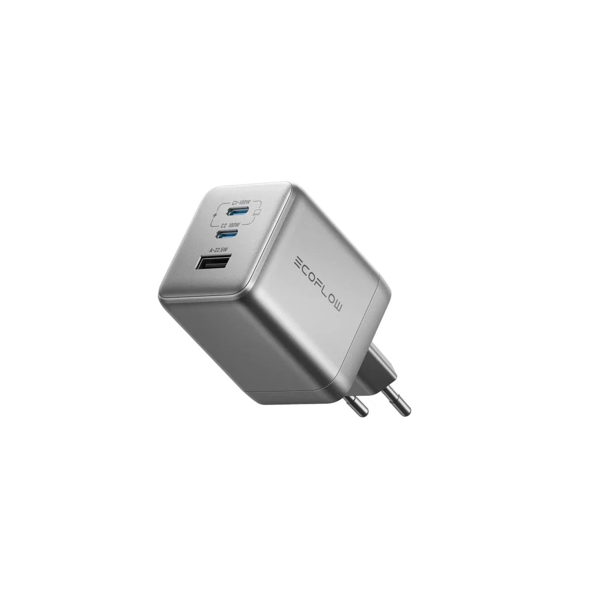

EcoFlow RAPID Pro 100W Test
Am besten geeignet für: Kompaktes Reiseladen, mobile Setups, sicherer Halt in Wandsteckdosen


Das EcoFlow RAPID Pro 100W GaN Ladegerät bietet 3 Anschlüsse (2x USB-C, 1x USB-A) und ein cleveres Antigravitations-Design, das ein Herausrutschen aus Steckdosen verhindert. Mit bis zu 100W Einzelausgang lädt es Laptops und Smartphones zuverlässig und schnell.
Für wen geeignet
Reisende und Pendler, die ein sicheres, leichtes und kompaktes Mehrfach-Ladegerät für unterwegs suchen.
Stärken
- Spezielle Antigravitations-Verriegelung hält das Ladegerät fest und sicher in der Steckdose
- Bis zu 100W Einzelleistung an den USB-C Ports lädt Laptops wie das MacBook Pro rasant auf
- Kompaktes 3-Port-Design (2C1A) mit einklappbaren Steckern für den Transport
- Extrem langlebige Anschlüsse, ausgelegt für bis zu 25.000 Steckzyklen
- Federleichtes Format von nur 185g bei effizienter GaN-Technologie
Kompromisse
- Bei gleichzeitiger Nutzung mehrerer Ports teilt sich die Leistung auf (z.B. 70W + 30W)
- Die maximale Einzelport-Leistung liegt bei 100W statt der von großen Laptops oft gewünschten 140W
Laden und Erweiterung
Liefert bis zu 100W über USB-C1/C2 im Einzelbetrieb und teilt die Leistung intelligent bei Mehrfachnutzung auf (z.B. 70W + 30W).
Häufig gestellte Fragen
Warum sitzt das Ladegerät so fest in der Steckdose?
Es verfügt über ein spezielles Antigravitations-Design mit Schwerkraftverriegelung, das ein Durchhängen oder Herausrutschen in lockeren Steckdosen verhindert.
Wie viele Anschlüsse stehen zur Verfügung?
Das Ladegerät bietet insgesamt 3 Anschlüsse: 2 USB-C Ports und 1 USB-A Port.
Wie hoch ist die maximale Leistung pro Anschluss?
Die beiden USB-C Anschlüsse liefern jeweils bis zu 100W, der USB-A Anschluss bis zu 22,5W.